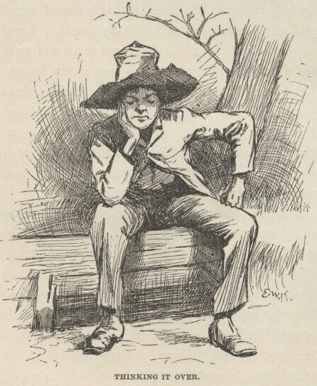
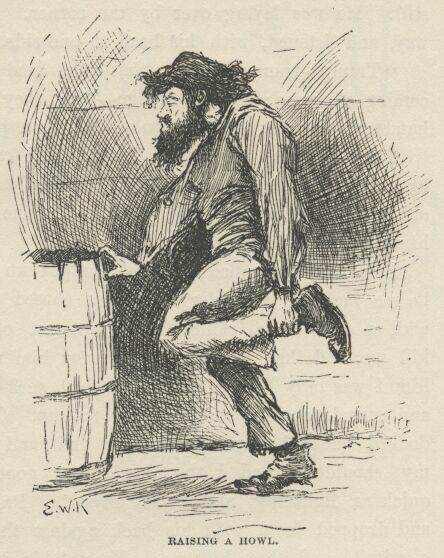
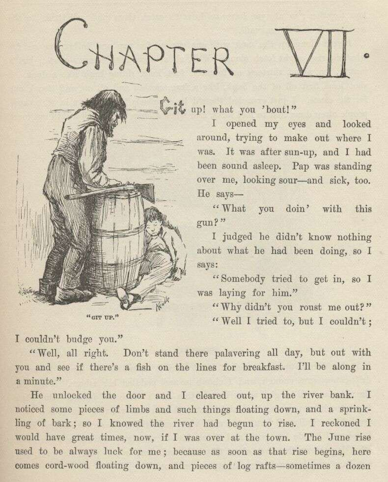
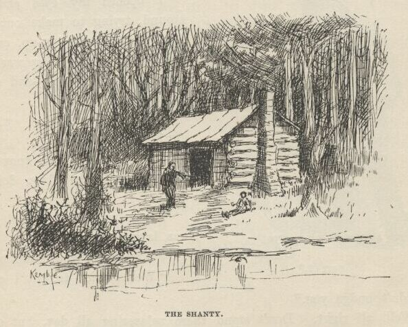
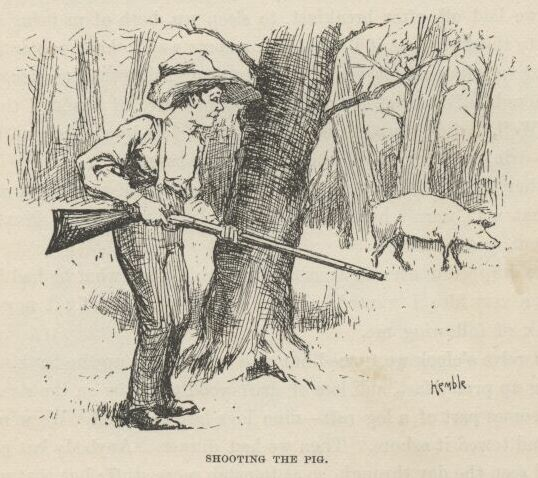
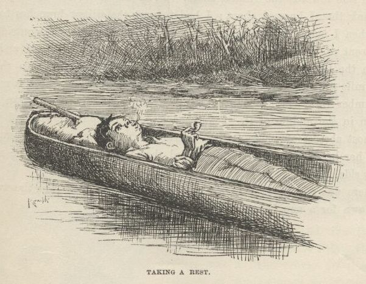
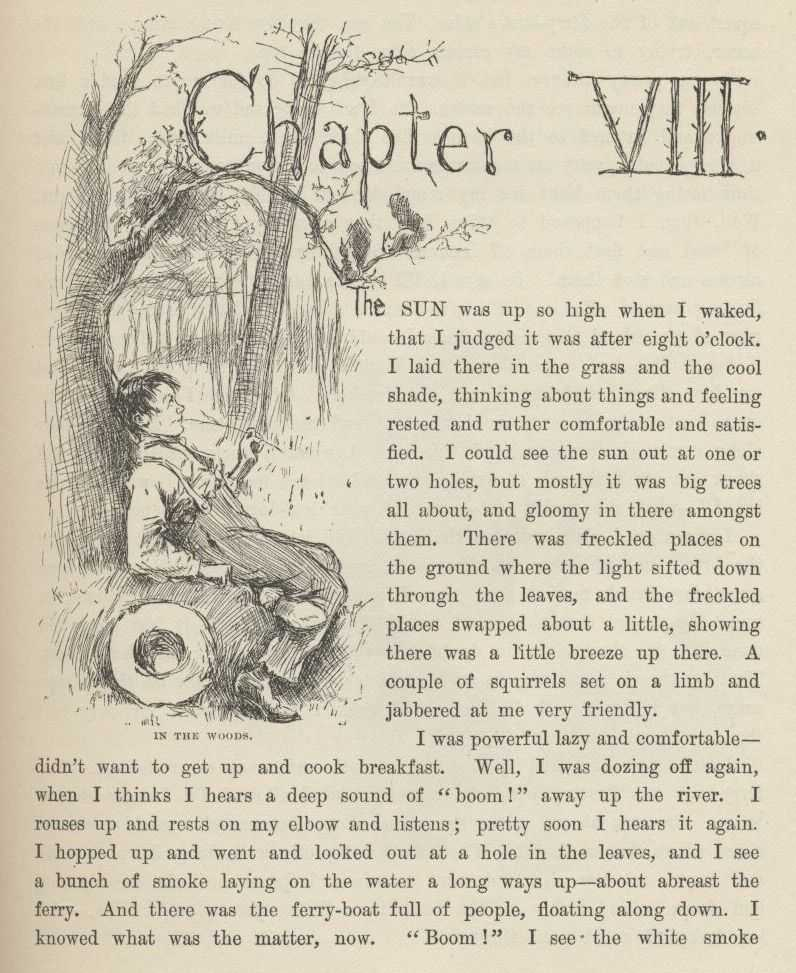
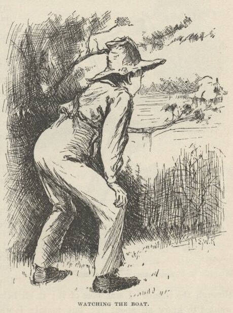
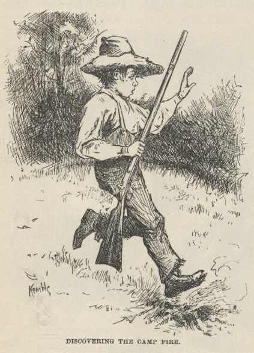
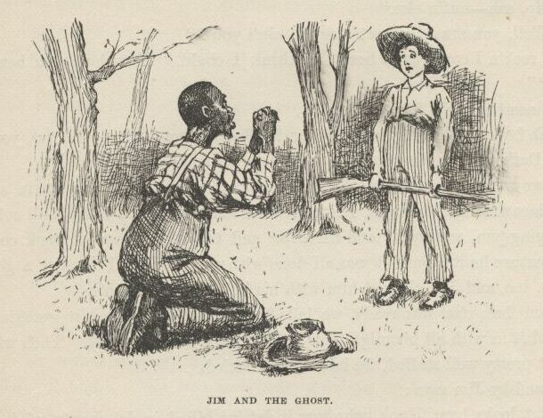

Adventures of Huckleberry Finn

I got the things all up to the cabin, and then it was about dark. While I was cooking
supper the old man took a swig or two and got sort of warmed up, and went to ripping
again. He had been drunk over in town, and laid in the gutter all night, and he was
a sight to look at. A body would a thought he was Adam—he was just all mud. Whenever
his liquor begun to work he most always went for the govment, this time he says:
"Call this a govment! why, just look at it and see what it's like. Here's the law
a-standing ready to take a man's son away from him—a man's own son, which he has had
all the trouble and all the anxiety and all the expense of raising. Yes, just as
that man has got that son raised at last, and ready to go to work and begin to do
suthin' for him and give him a rest, the law up and goes for him. And they call that govment! That ain't all, nuther. The law backs that old Judge Thatcher up and helps
him to keep me out o' my property. Here's what the law does: The law takes a man
worth six thousand dollars and up'ards, and jams him into an old trap of a cabin like
this, and lets him go round in clothes that ain't fitten for a hog. They call that
govment! A man can't get his rights in a govment like this. Sometimes I've a mighty
notion to just leave the country for good and all. Yes, and I told 'em so; I told old Thatcher so to his face. Lots of 'em heard me, and can tell what
I said. Says I, for two cents I'd leave the blamed country and never come a-near
it agin. Them's the very words. I says look at my hat—if you call it a hat—but the
lid raises up and the rest of it goes down till it's below my chin, and then it ain't
rightly a hat at all, but more like my head was shoved up through a jint o' stove-pipe.
Look at it, says I—such a hat for me to wear—one of the wealthiest men in this town
if I could git my rights.
"Oh, yes, this is a wonderful govment, wonderful. Why, looky here. There was a free
nigger there from Ohio—a mulatter, most as white as a white man. He had the whitest
shirt on you ever see, too, and the shiniest hat; and there ain't a man in that town
that's got as fine clothes as what he had; and he had a gold watch and chain, and
a silver-headed cane—the awfulest old gray-headed nabob in the State. And what do
you think? They said he was a p'fessor in a college, and could talk all kinds of
languages, and knowed everything. And that ain't the wust. They said he could vote when he was at home. Well, that let me out. Thinks I, what is the country a-coming
to? It was 'lection day, and I was just about to go and vote myself if I warn't too
drunk to get there; but when they told me there was a State in this country where
they'd let that nigger vote, I drawed out. I says I'll never vote agin. Them's the
very words I said; they all heard me; and the country may rot for all me—I'll never
vote agin as long as I live. And to see the cool way of that nigger—why, he wouldn't
a give me the road if I hadn't shoved him out o' the way. I says to the people, why
ain't this nigger put up at auction and sold?—that's what I want to know. And what
do you reckon they said? Why, they said he couldn't be sold till he'd been in the
State six months, and he hadn't been there that long yet. There, now—that's a specimen.
They call that a govment that can't sell a free nigger till he's been in the State
six months. Here's a govment that calls itself a govment, and lets on to be a govment,
and thinks it is a govment, and yet's got to set stock-still for six whole months
before it can take a hold of a prowling, thieving, infernal, white-shirted free nigger,
and—"
Pap was agoing on so he never noticed where his old limber legs was taking him to,
so he went head over heels over the tub of salt pork and barked both shins, and the
rest of his speech was all the hottest kind of language—mostly hove at the nigger
and the govment, though he give the tub some, too, all along, here and there. He
hopped around the cabin considerable, first on one leg and then on the other, holding
first one shin and then the other one, and at last he let out with his left foot all
of a sudden and fetched the tub a rattling kick. But it warn't good judgment, because
that was the boot that had a couple of his toes leaking out of the front end of it;
so now he raised a howl that fairly made a body's hair raise, and down he went in
the dirt, and rolled there, and held his toes; and the cussing he done then laid over
anything he had ever done previous. He said so his own self afterwards. He had heard
old Sowberry Hagan in his best days, and he said it laid over him, too; but I reckon
that was sort of piling it on, maybe.
After supper pap took the jug, and said he had enough whisky there for two drunks
and one delirium tremens. That was always his word. I judged he would be blind drunk
in about an hour, and then I would steal the key, or saw myself out, one or t'other.
He drank and drank, and tumbled down on his blankets by and by; but luck didn't run
my way. He didn't go sound asleep, but was uneasy. He groaned and moaned and thrashed
around this way and that for a long time. At last I got so sleepy I couldn't keep
my eyes open all I could do, and so before I knowed what I was about I was sound asleep,
and the candle burning.

I don't know how long I was asleep, but all of a sudden there was an awful scream
and I was up. There was pap looking wild, and skipping around every which way and
yelling about snakes. He said they was crawling up his legs; and then he would give
a jump and scream, and say one had bit him on the cheek—but I couldn't see no snakes.
He started and run round and round the cabin, hollering "Take him off! take him off!
he's biting me on the neck!" I never see a man look so wild in the eyes. Pretty soon
he was all fagged out, and fell down panting; then he rolled over and over wonderful
fast, kicking things every which way, and striking and grabbing at the air with his
hands, and screaming and saying there was devils a-hold of him. He wore out by and
by, and laid still a while, moaning. Then he laid stiller, and didn't make a sound.
I could hear the owls and the wolves away off in the woods, and it seemed terrible
still. He was laying over by the corner. By and by he raised up part way and listened,
with his head to one side. He says, very low:
"Tramp—tramp—tramp; that's the dead; tramp—tramp—tramp; they're coming after me; but
I won't go. Oh, they're here! don't touch me—don't! hands off—they're cold; let go.
Oh, let a poor devil alone!"
Then he went down on all fours and crawled off, begging them to let him alone, and
he rolled himself up in his blanket and wallowed in under the old pine table, still
a-begging; and then he went to crying. I could hear him through the blanket.
By and by he rolled out and jumped up on his feet looking wild, and he see me and
went for me. He chased me round and round the place with a clasp-knife, calling me
the Angel of Death, and saying he would kill me, and then I couldn't come for him
no more. I begged, and told him I was only Huck; but he laughed such a screechy laugh, and roared and cussed, and kept on chasing me up. Once when I
turned short and dodged under his arm he made a grab and got me by the jacket between
my shoulders, and I thought I was gone; but I slid out of the jacket quick as lightning,
and saved myself. Pretty soon he was all tired out, and dropped down with his back
against the door, and said he would rest a minute and then kill me. He put his knife
under him, and said he would sleep and get strong, and then he would see who was who.
So he dozed off pretty soon. By and by I got the old split-bottom chair and clumb
up as easy as I could, not to make any noise, and got down the gun. I slipped the
ramrod down it to make sure it was loaded, then I laid it across the turnip barrel,
pointing towards pap, and set down behind it to wait for him to stir. And how slow
and still the time did drag along.

CHAPTER VII.
"GIT up! What you 'bout?"
I opened my eyes and looked around, trying to make out where I was. It was after
sun-up, and I had been sound asleep. Pap was standing over me looking sour and sick,
too. He says:
"What you doin' with this gun?"
I judged he didn't know nothing about what he had been doing, so I says:
"Somebody tried to get in, so I was laying for him."
"Why didn't you roust me out?"
"Well, I tried to, but I couldn't; I couldn't budge you."
"Well, all right. Don't stand there palavering all day, but out with you and see
if there's a fish on the lines for breakfast. I'll be along in a minute."
He unlocked the door, and I cleared out up the river-bank. I noticed some pieces
of limbs and such things floating down, and a sprinkling of bark; so I knowed the
river had begun to rise. I reckoned I would have great times now if I was over at
the town. The June rise used to be always luck for me; because as soon as that rise
begins here comes cordwood floating down, and pieces of log rafts—sometimes a dozen
logs together; so all you have to do is to catch them and sell them to the wood-yards
and the sawmill.
I went along up the bank with one eye out for pap and t'other one out for what the
rise might fetch along. Well, all at once here comes a canoe; just a beauty, too,
about thirteen or fourteen foot long, riding high like a duck. I shot head-first
off of the bank like a frog, clothes and all on, and struck out for the canoe. I
just expected there'd be somebody laying down in it, because people often done that
to fool folks, and when a chap had pulled a skiff out most to it they'd raise up and
laugh at him. But it warn't so this time. It was a drift-canoe sure enough, and
I clumb in and paddled her ashore. Thinks I, the old man will be glad when he sees
this—she's worth ten dollars. But when I got to shore pap wasn't in sight yet, and
as I was running her into a little creek like a gully, all hung over with vines and
willows, I struck another idea: I judged I'd hide her good, and then, 'stead of taking
to the woods when I run off, I'd go down the river about fifty mile and camp in one
place for good, and not have such a rough time tramping on foot.

It was pretty close to the shanty, and I thought I heard the old man coming all the
time; but I got her hid; and then I out and looked around a bunch of willows, and
there was the old man down the path a piece just drawing a bead on a bird with his
gun. So he hadn't seen anything.
When he got along I was hard at it taking up a "trot" line. He abused me a little
for being so slow; but I told him I fell in the river, and that was what made me so
long. I knowed he would see I was wet, and then he would be asking questions. We
got five catfish off the lines and went home.
While we laid off after breakfast to sleep up, both of us being about wore out, I
got to thinking that if I could fix up some way to keep pap and the widow from trying
to follow me, it would be a certainer thing than trusting to luck to get far enough
off before they missed me; you see, all kinds of things might happen. Well, I didn't
see no way for a while, but by and by pap raised up a minute to drink another barrel
of water, and he says:
"Another time a man comes a-prowling round here you roust me out, you hear? That man
warn't here for no good. I'd a shot him. Next time you roust me out, you hear?"
Then he dropped down and went to sleep again; but what he had been saying give me
the very idea I wanted. I says to myself, I can fix it now so nobody won't think
of following me.
About twelve o'clock we turned out and went along up the bank. The river was coming
up pretty fast, and lots of driftwood going by on the rise. By and by along comes
part of a log raft—nine logs fast together. We went out with the skiff and towed
it ashore. Then we had dinner. Anybody but pap would a waited and seen the day through,
so as to catch more stuff; but that warn't pap's style. Nine logs was enough for
one time; he must shove right over to town and sell. So he locked me in and took
the skiff, and started off towing the raft about half-past three. I judged he wouldn't
come back that night. I waited till I reckoned he had got a good start; then I out
with my saw, and went to work on that log again. Before he was t'other side of the
river I was out of the hole; him and his raft was just a speck on the water away off
yonder.
I took the sack of corn meal and took it to where the canoe was hid, and shoved the
vines and branches apart and put it in; then I done the same with the side of bacon;
then the whisky-jug. I took all the coffee and sugar there was, and all the ammunition;
I took the wadding; I took the bucket and gourd; I took a dipper and a tin cup, and
my old saw and two blankets, and the skillet and the coffee-pot. I took fish-lines
and matches and other things—everything that was worth a cent. I cleaned out the
place. I wanted an axe, but there wasn't any, only the one out at the woodpile, and
I knowed why I was going to leave that. I fetched out the gun, and now I was done.
I had wore the ground a good deal crawling out of the hole and dragging out so many
things. So I fixed that as good as I could from the outside by scattering dust on
the place, which covered up the smoothness and the sawdust. Then I fixed the piece
of log back into its place, and put two rocks under it and one against it to hold
it there, for it was bent up at that place and didn't quite touch ground. If you
stood four or five foot away and didn't know it was sawed, you wouldn't never notice
it; and besides, this was the back of the cabin, and it warn't likely anybody would
go fooling around there.
It was all grass clear to the canoe, so I hadn't left a track. I followed around
to see. I stood on the bank and looked out over the river. All safe. So I took
the gun and went up a piece into the woods, and was hunting around for some birds
when I see a wild pig; hogs soon went wild in them bottoms after they had got away
from the prairie farms. I shot this fellow and took him into camp.

I took the axe and smashed in the door. I beat it and hacked it considerable a-doing
it. I fetched the pig in, and took him back nearly to the table and hacked into his
throat with the axe, and laid him down on the ground to bleed; I say ground because
it was ground—hard packed, and no boards. Well, next I took an old sack and put a
lot of big rocks in it—all I could drag—and I started it from the pig, and dragged
it to the door and through the woods down to the river and dumped it in, and down
it sunk, out of sight. You could easy see that something had been dragged over the
ground. I did wish Tom Sawyer was there; I knowed he would take an interest in this
kind of business, and throw in the fancy touches. Nobody could spread himself like
Tom Sawyer in such a thing as that.
Well, last I pulled out some of my hair, and blooded the axe good, and stuck it on
the back side, and slung the axe in the corner. Then I took up the pig and held him
to my breast with my jacket (so he couldn't drip) till I got a good piece below the
house and then dumped him into the river. Now I thought of something else. So I
went and got the bag of meal and my old saw out of the canoe, and fetched them to
the house. I took the bag to where it used to stand, and ripped a hole in the bottom
of it with the saw, for there warn't no knives and forks on the place—pap done everything
with his clasp-knife about the cooking. Then I carried the sack about a hundred yards
across the grass and through the willows east of the house, to a shallow lake that
was five mile wide and full of rushes—and ducks too, you might say, in the season.
There was a slough or a creek leading out of it on the other side that went miles
away, I don't know where, but it didn't go to the river. The meal sifted out and
made a little track all the way to the lake. I dropped pap's whetstone there too,
so as to look like it had been done by accident. Then I tied up the rip in the meal
sack with a string, so it wouldn't leak no more, and took it and my saw to the canoe
again.
It was about dark now; so I dropped the canoe down the river under some willows that
hung over the bank, and waited for the moon to rise. I made fast to a willow; then
I took a bite to eat, and by and by laid down in the canoe to smoke a pipe and lay
out a plan. I says to myself, they'll follow the track of that sackful of rocks to
the shore and then drag the river for me. And they'll follow that meal track to the
lake and go browsing down the creek that leads out of it to find the robbers that
killed me and took the things. They won't ever hunt the river for anything but my
dead carcass. They'll soon get tired of that, and won't bother no more about me. All
right; I can stop anywhere I want to. Jackson's Island is good enough for me; I know
that island pretty well, and nobody ever comes there. And then I can paddle over
to town nights, and slink around and pick up things I want. Jackson's Island's the
place.
I was pretty tired, and the first thing I knowed I was asleep. When I woke up I didn't
know where I was for a minute. I set up and looked around, a little scared. Then
I remembered. The river looked miles and miles across. The moon was so bright I
could a counted the drift logs that went a-slipping along, black and still, hundreds
of yards out from shore. Everything was dead quiet, and it looked late, and smelt late. You know what I mean—I don't know the words to put it in.
I took a good gap and a stretch, and was just going to unhitch and start when I heard
a sound away over the water. I listened. Pretty soon I made it out. It was that
dull kind of a regular sound that comes from oars working in rowlocks when it's a
still night. I peeped out through the willow branches, and there it was—a skiff,
away across the water. I couldn't tell how many was in it. It kept a-coming, and
when it was abreast of me I see there warn't but one man in it. Think's I, maybe
it's pap, though I warn't expecting him. He dropped below me with the current, and
by and by he came a-swinging up shore in the easy water, and he went by so close I
could a reached out the gun and touched him. Well, it was pap, sure enough—and sober, too, by the way he laid his oars.
I didn't lose no time. The next minute I was a-spinning down stream soft but quick
in the shade of the bank. I made two mile and a half, and then struck out a quarter
of a mile or more towards the middle of the river, because pretty soon I would be
passing the ferry landing, and people might see me and hail me. I got out amongst
the driftwood, and then laid down in the bottom of the canoe and let her float.

I laid there, and had a good rest and a smoke out of my pipe, looking away into the
sky; not a cloud in it. The sky looks ever so deep when you lay down on your back
in the moonshine; I never knowed it before. And how far a body can hear on the water
such nights! I heard people talking at the ferry landing. I heard what they said,
too—every word of it. One man said it was getting towards the long days and the short
nights now. T'other one said this warn't one of the short ones, he reckoned—and then they laughed, and he said it over
again, and they laughed again; then they waked up another fellow and told him, and
laughed, but he didn't laugh; he ripped out something brisk, and said let him alone.
The first fellow said he 'lowed to tell it to his old woman—she would think it was
pretty good; but he said that warn't nothing to some things he had said in his time.
I heard one man say it was nearly three o'clock, and he hoped daylight wouldn't wait
more than about a week longer. After that the talk got further and further away,
and I couldn't make out the words any more; but I could hear the mumble, and now and
then a laugh, too, but it seemed a long ways off.
I was away below the ferry now. I rose up, and there was Jackson's Island, about
two mile and a half down stream, heavy timbered and standing up out of the middle
of the river, big and dark and solid, like a steamboat without any lights. There
warn't any signs of the bar at the head—it was all under water now.
It didn't take me long to get there. I shot past the head at a ripping rate, the
current was so swift, and then I got into the dead water and landed on the side towards
the Illinois shore. I run the canoe into a deep dent in the bank that I knowed about;
I had to part the willow branches to get in; and when I made fast nobody could a seen
the canoe from the outside.
I went up and set down on a log at the head of the island, and looked out on the big
river and the black driftwood and away over to the town, three mile away, where there
was three or four lights twinkling. A monstrous big lumber-raft was about a mile
up stream, coming along down, with a lantern in the middle of it. I watched it come
creeping down, and when it was most abreast of where I stood I heard a man say, "Stern
oars, there! heave her head to stabboard!" I heard that just as plain as if the man
was by my side.
There was a little gray in the sky now; so I stepped into the woods, and laid down
for a nap before breakfast.

CHAPTER VIII.
THE sun was up so high when I waked that I judged it was after eight o'clock. I laid
there in the grass and the cool shade thinking about things, and feeling rested and
ruther comfortable and satisfied. I could see the sun out at one or two holes, but
mostly it was big trees all about, and gloomy in there amongst them. There was freckled
places on the ground where the light sifted down through the leaves, and the freckled
places swapped about a little, showing there was a little breeze up there. A couple
of squirrels set on a limb and jabbered at me very friendly.
I was powerful lazy and comfortable—didn't want to get up and cook breakfast. Well,
I was dozing off again when I thinks I hears a deep sound of "boom!" away up the river.
I rouses up, and rests on my elbow and listens; pretty soon I hears it again. I
hopped up, and went and looked out at a hole in the leaves, and I see a bunch of smoke
laying on the water a long ways up—about abreast the ferry. And there was the ferryboat
full of people floating along down. I knowed what was the matter now. "Boom!" I
see the white smoke squirt out of the ferryboat's side. You see, they was firing
cannon over the water, trying to make my carcass come to the top.
I was pretty hungry, but it warn't going to do for me to start a fire, because they
might see the smoke. So I set there and watched the cannon-smoke and listened to
the boom. The river was a mile wide there, and it always looks pretty on a summer
morning—so I was having a good enough time seeing them hunt for my remainders if I
only had a bite to eat. Well, then I happened to think how they always put quicksilver
in loaves of bread and float them off, because they always go right to the drownded
carcass and stop there. So, says I, I'll keep a lookout, and if any of them's floating
around after me I'll give them a show. I changed to the Illinois edge of the island
to see what luck I could have, and I warn't disappointed. A big double loaf come
along, and I most got it with a long stick, but my foot slipped and she floated out
further. Of course I was where the current set in the closest to the shore—I knowed
enough for that. But by and by along comes another one, and this time I won. I took
out the plug and shook out the little dab of quicksilver, and set my teeth in. It
was "baker's bread"—what the quality eat; none of your low-down corn-pone.
I got a good place amongst the leaves, and set there on a log, munching the bread
and watching the ferry-boat, and very well satisfied. And then something struck me.
I says, now I reckon the widow or the parson or somebody prayed that this bread would
find me, and here it has gone and done it. So there ain't no doubt but there is something
in that thing—that is, there's something in it when a body like the widow or the parson
prays, but it don't work for me, and I reckon it don't work for only just the right
kind.

I lit a pipe and had a good long smoke, and went on watching. The ferryboat was floating
with the current, and I allowed I'd have a chance to see who was aboard when she come
along, because she would come in close, where the bread did. When she'd got pretty
well along down towards me, I put out my pipe and went to where I fished out the bread,
and laid down behind a log on the bank in a little open place. Where the log forked
I could peep through.
By and by she come along, and she drifted in so close that they could a run out a
plank and walked ashore. Most everybody was on the boat. Pap, and Judge Thatcher,
and Bessie Thatcher, and Jo Harper, and Tom Sawyer, and his old Aunt Polly, and Sid
and Mary, and plenty more. Everybody was talking about the murder, but the captain
broke in and says:
"Look sharp, now; the current sets in the closest here, and maybe he's washed ashore
and got tangled amongst the brush at the water's edge. I hope so, anyway."
I didn't hope so. They all crowded up and leaned over the rails, nearly in my face,
and kept still, watching with all their might. I could see them first-rate, but they
couldn't see me. Then the captain sung out:
"Stand away!" and the cannon let off such a blast right before me that it made me
deef with the noise and pretty near blind with the smoke, and I judged I was gone.
If they'd a had some bullets in, I reckon they'd a got the corpse they was after.
Well, I see I warn't hurt, thanks to goodness. The boat floated on and went out of
sight around the shoulder of the island. I could hear the booming now and then, further
and further off, and by and by, after an hour, I didn't hear it no more. The island
was three mile long. I judged they had got to the foot, and was giving it up. But
they didn't yet a while. They turned around the foot of the island and started up
the channel on the Missouri side, under steam, and booming once in a while as they
went. I crossed over to that side and watched them. When they got abreast the head
of the island they quit shooting and dropped over to the Missouri shore and went home
to the town.
I knowed I was all right now. Nobody else would come a-hunting after me. I got my
traps out of the canoe and made me a nice camp in the thick woods. I made a kind
of a tent out of my blankets to put my things under so the rain couldn't get at them.
I catched a catfish and haggled him open with my saw, and towards sundown I started
my camp fire and had supper. Then I set out a line to catch some fish for breakfast.
When it was dark I set by my camp fire smoking, and feeling pretty well satisfied;
but by and by it got sort of lonesome, and so I went and set on the bank and listened
to the current swashing along, and counted the stars and drift logs and rafts that
come down, and then went to bed; there ain't no better way to put in time when you
are lonesome; you can't stay so, you soon get over it.
And so for three days and nights. No difference—just the same thing. But the next
day I went exploring around down through the island. I was boss of it; it all belonged
to me, so to say, and I wanted to know all about it; but mainly I wanted to put in
the time. I found plenty strawberries, ripe and prime; and green summer grapes, and
green razberries; and the green blackberries was just beginning to show. They would
all come handy by and by, I judged.
Well, I went fooling along in the deep woods till I judged I warn't far from the foot
of the island. I had my gun along, but I hadn't shot nothing; it was for protection;
thought I would kill some game nigh home. About this time I mighty near stepped on
a good-sized snake, and it went sliding off through the grass and flowers, and I after
it, trying to get a shot at it. I clipped along, and all of a sudden I bounded right
on to the ashes of a camp fire that was still smoking.

My heart jumped up amongst my lungs. I never waited for to look further, but uncocked
my gun and went sneaking back on my tiptoes as fast as ever I could. Every now and
then I stopped a second amongst the thick leaves and listened, but my breath come
so hard I couldn't hear nothing else. I slunk along another piece further, then listened
again; and so on, and so on. If I see a stump, I took it for a man; if I trod on
a stick and broke it, it made me feel like a person had cut one of my breaths in two
and I only got half, and the short half, too.
When I got to camp I warn't feeling very brash, there warn't much sand in my craw;
but I says, this ain't no time to be fooling around. So I got all my traps into my
canoe again so as to have them out of sight, and I put out the fire and scattered
the ashes around to look like an old last year's camp, and then clumb a tree.
I reckon I was up in the tree two hours; but I didn't see nothing, I didn't hear nothing—I
only thought I heard and seen as much as a thousand things. Well, I couldn't stay up there forever;
so at last I got down, but I kept in the thick woods and on the lookout all the time.
All I could get to eat was berries and what was left over from breakfast.
By the time it was night I was pretty hungry. So when it was good and dark I slid
out from shore before moonrise and paddled over to the Illinois bank—about a quarter
of a mile. I went out in the woods and cooked a supper, and I had about made up my
mind I would stay there all night when I hear a plunkety-plunk, plunkety-plunk, and says to myself, horses coming; and next I hear people's voices. I got everything
into the canoe as quick as I could, and then went creeping through the woods to see
what I could find out. I hadn't got far when I hear a man say:
"We better camp here if we can find a good place; the horses is about beat out. Let's
look around."
I didn't wait, but shoved out and paddled away easy. I tied up in the old place,
and reckoned I would sleep in the canoe.
I didn't sleep much. I couldn't, somehow, for thinking. And every time I waked up
I thought somebody had me by the neck. So the sleep didn't do me no good. By and
by I says to myself, I can't live this way; I'm a-going to find out who it is that's
here on the island with me; I'll find it out or bust. Well, I felt better right off.
So I took my paddle and slid out from shore just a step or two, and then let the canoe
drop along down amongst the shadows. The moon was shining, and outside of the shadows
it made it most as light as day. I poked along well on to an hour, everything still
as rocks and sound asleep. Well, by this time I was most down to the foot of the island.
A little ripply, cool breeze begun to blow, and that was as good as saying the night
was about done. I give her a turn with the paddle and brung her nose to shore; then
I got my gun and slipped out and into the edge of the woods. I sat down there on
a log, and looked out through the leaves. I see the moon go off watch, and the darkness
begin to blanket the river. But in a little while I see a pale streak over the treetops,
and knowed the day was coming. So I took my gun and slipped off towards where I had
run across that camp fire, stopping every minute or two to listen. But I hadn't no
luck somehow; I couldn't seem to find the place. But by and by, sure enough, I catched
a glimpse of fire away through the trees. I went for it, cautious and slow. By and
by I was close enough to have a look, and there laid a man on the ground. It most
give me the fan-tods. He had a blanket around his head, and his head was nearly in
the fire. I set there behind a clump of bushes, in about six foot of him, and kept
my eyes on him steady. It was getting gray daylight now. Pretty soon he gapped and
stretched himself and hove off the blanket, and it was Miss Watson's Jim! I bet I
was glad to see him. I says:
"Hello, Jim!" and skipped out.
He bounced up and stared at me wild. Then he drops down on his knees, and puts his
hands together and says:
"Doan' hurt me—don't! I hain't ever done no harm to a ghos'. I alwuz liked dead
people, en done all I could for 'em. You go en git in de river agin, whah you b'longs,
en doan' do nuffn to Ole Jim, 'at 'uz awluz yo' fren'."

Well, I warn't long making him understand I warn't dead. I was ever so glad to see
Jim. I warn't lonesome now. I told him I warn't afraid of him telling the people where I was. I talked along, but he only set there and looked
at me; never said nothing. Then I says:
"It's good daylight. Le's get breakfast. Make up your camp fire good."
"What's de use er makin' up de camp fire to cook strawbries en sich truck? But you
got a gun, hain't you? Den we kin git sumfn better den strawbries."
"Strawberries and such truck," I says. "Is that what you live on?"
"I couldn' git nuffn else," he says.
"Why, how long you been on the island, Jim?"
"I come heah de night arter you's killed."
"What, all that time?"
"Yes—indeedy."
"And ain't you had nothing but that kind of rubbage to eat?"
"No, sah—nuffn else."
"Well, you must be most starved, ain't you?"
"I reck'n I could eat a hoss. I think I could. How long you ben on de islan'?"
"Since the night I got killed."
"No! W'y, what has you lived on? But you got a gun. Oh, yes, you got a gun. Dat's
good. Now you kill sumfn en I'll make up de fire."
So we went over to where the canoe was, and while he built a fire in a grassy open
place amongst the trees, I fetched meal and bacon and coffee, and coffee-pot and frying-pan,
and sugar and tin cups, and the nigger was set back considerable, because he reckoned
it was all done with witchcraft. I catched a good big catfish, too, and Jim cleaned
him with his knife, and fried him.
When breakfast was ready we lolled on the grass and eat it smoking hot. Jim laid it
in with all his might, for he was most about starved. Then when we had got pretty
well stuffed, we laid off and lazied. By and by Jim says:
"But looky here, Huck, who wuz it dat 'uz killed in dat shanty ef it warn't you?"
Then I told him the whole thing, and he said it was smart. He said Tom Sawyer couldn't
get up no better plan than what I had. Then I says:
"How do you come to be here, Jim, and how'd you get here?"
He looked pretty uneasy, and didn't say nothing for a minute. Then he says:
"Maybe I better not tell."
"Why, Jim?"
"Well, dey's reasons. But you wouldn' tell on me ef I uz to tell you, would you,
Huck?"
"Blamed if I would, Jim."
"Well, I b'lieve you, Huck. I—I run off."
"Jim!"
"But mind, you said you wouldn' tell—you know you said you wouldn' tell, Huck."
"Well, I did. I said I wouldn't, and I'll stick to it. Honest injun, I will. People would call me a low-down Abolitionist and despise me for keeping
mum—but that don't make no difference. I ain't a-going to tell, and I ain't a-going
back there, anyways. So, now, le's know all about it."
"Well, you see, it 'uz dis way. Ole missus—dat's Miss Watson—she pecks on me all
de time, en treats me pooty rough, but she awluz said she wouldn' sell me down to
Orleans. But I noticed dey wuz a nigger trader roun' de place considable lately,
en I begin to git oneasy. Well, one night I creeps to de do' pooty late, en de do'
warn't quite shet, en I hear old missus tell de widder she gwyne to sell me down to
Orleans, but she didn' want to, but she could git eight hund'd dollars for me, en
it 'uz sich a big stack o' money she couldn' resis'. De widder she try to git her
to say she wouldn' do it, but I never waited to hear de res'. I lit out mighty quick,
I tell you.
"I tuck out en shin down de hill, en 'spec to steal a skift 'long de sho' som'ers
'bove de town, but dey wuz people a-stirring yit, so I hid in de ole tumble-down cooper-shop
on de bank to wait for everybody to go 'way. Well, I wuz dah all night. Dey wuz somebody
roun' all de time. 'Long 'bout six in de mawnin' skifts begin to go by, en 'bout
eight er nine every skift dat went 'long wuz talkin' 'bout how yo' pap come over to
de town en say you's killed. Dese las' skifts wuz full o' ladies en genlmen a-goin'
over for to see de place. Sometimes dey'd pull up at de sho' en take a res' b'fo'
dey started acrost, so by de talk I got to know all 'bout de killin'. I 'uz powerful
sorry you's killed, Huck, but I ain't no mo' now.
"I laid dah under de shavin's all day. I 'uz hungry, but I warn't afeard; bekase
I knowed ole missus en de widder wuz goin' to start to de camp-meet'n' right arter
breakfas' en be gone all day, en dey knows I goes off wid de cattle 'bout daylight,
so dey wouldn' 'spec to see me roun' de place, en so dey wouldn' miss me tell arter
dark in de evenin'. De yuther servants wouldn' miss me, kase dey'd shin out en take
holiday soon as de ole folks 'uz out'n de way.
"Well, when it come dark I tuck out up de river road, en went 'bout two mile er more
to whah dey warn't no houses. I'd made up my mine 'bout what I's agwyne to do. You
see, ef I kep' on tryin' to git away afoot, de dogs 'ud track me; ef I stole a skift
to cross over, dey'd miss dat skift, you see, en dey'd know 'bout whah I'd lan' on
de yuther side, en whah to pick up my track. So I says, a raff is what I's arter;
it doan' make no track.
"I see a light a-comin' roun' de p'int bymeby, so I wade' in en shove' a log ahead
o' me en swum more'n half way acrost de river, en got in 'mongst de drift-wood, en
kep' my head down low, en kinder swum agin de current tell de raff come along. Den
I swum to de stern uv it en tuck a-holt. It clouded up en 'uz pooty dark for a little
while. So I clumb up en laid down on de planks. De men 'uz all 'way yonder in de
middle, whah de lantern wuz. De river wuz a-risin', en dey wuz a good current; so
I reck'n'd 'at by fo' in de mawnin' I'd be twenty-five mile down de river, en den
I'd slip in jis b'fo' daylight en swim asho', en take to de woods on de Illinois side.
"But I didn' have no luck. When we 'uz mos' down to de head er de islan' a man begin
to come aft wid de lantern, I see it warn't no use fer to wait, so I slid overboard
en struck out fer de islan'. Well, I had a notion I could lan' mos' anywhers, but
I couldn't—bank too bluff. I 'uz mos' to de foot er de islan' b'fo' I found' a good
place. I went into de woods en jedged I wouldn' fool wid raffs no mo', long as dey
move de lantern roun' so. I had my pipe en a plug er dog-leg, en some matches in
my cap, en dey warn't wet, so I 'uz all right."
"And so you ain't had no meat nor bread to eat all this time? Why didn't you get
mud-turkles?"
"How you gwyne to git 'm? You can't slip up on um en grab um; en how's a body gwyne
to hit um wid a rock? How could a body do it in de night? En I warn't gwyne to show
mysef on de bank in de daytime."
"Well, that's so. You've had to keep in the woods all the time, of course. Did you
hear 'em shooting the cannon?"
"Oh, yes. I knowed dey was arter you. I see um go by heah—watched um thoo de bushes."
Some young birds come along, flying a yard or two at a time and lighting. Jim said
it was a sign it was going to rain. He said it was a sign when young chickens flew
that way, and so he reckoned it was the same way when young birds done it. I was
going to catch some of them, but Jim wouldn't let me. He said it was death. He said
his father laid mighty sick once, and some of them catched a bird, and his old granny
said his father would die, and he did.
And Jim said you mustn't count the things you are going to cook for dinner, because
that would bring bad luck. The same if you shook the table-cloth after sundown. And
he said if a man owned a beehive and that man died, the bees must be told about it
before sun-up next morning, or else the bees would all weaken down and quit work and
die. Jim said bees wouldn't sting idiots; but I didn't believe that, because I had
tried them lots of times myself, and they wouldn't sting me.
I had heard about some of these things before, but not all of them. Jim knowed all
kinds of signs. He said he knowed most everything. I said it looked to me like all
the signs was about bad luck, and so I asked him if there warn't any good-luck signs.
He says:
"Mighty few—an' dey ain't no use to a body. What you want to know when good luck's a-comin' for? Want
to keep it off?" And he said: "Ef you's got hairy arms en a hairy breas', it's a
sign dat you's agwyne to be rich. Well, dey's some use in a sign like dat, 'kase it's
so fur ahead. You see, maybe you's got to be po' a long time fust, en so you might
git discourage' en kill yo'sef 'f you didn' know by de sign dat you gwyne to be rich
bymeby."
"Have you got hairy arms and a hairy breast, Jim?"
"What's de use to ax dat question? Don't you see I has?"
"Well, are you rich?"
"No, but I ben rich wunst, and gwyne to be rich agin. Wunst I had foteen dollars,
but I tuck to specalat'n', en got busted out."
"What did you speculate in, Jim?"
"Well, fust I tackled stock."
"What kind of stock?"
"Why, live stock—cattle, you know. I put ten dollars in a cow. But I ain' gwyne
to resk no mo' money in stock. De cow up 'n' died on my han's."
"So you lost the ten dollars."
"No, I didn't lose it all. I on'y los' 'bout nine of it. I sole de hide en taller
for a dollar en ten cents."
"You had five dollars and ten cents left. Did you speculate any more?"